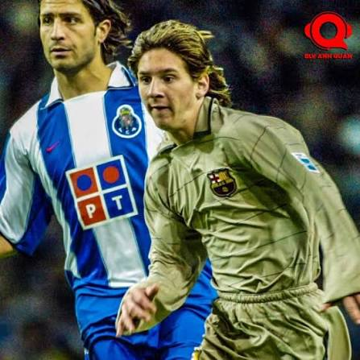
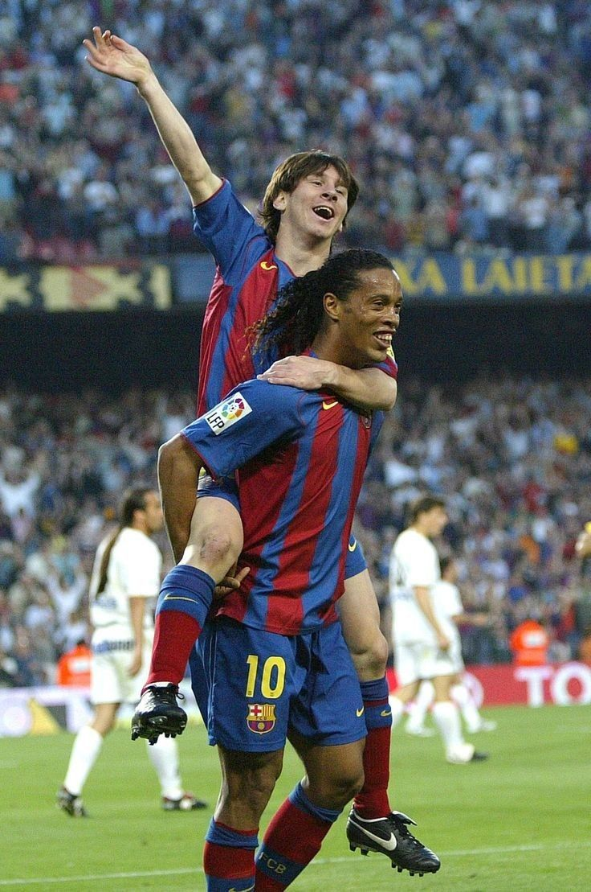
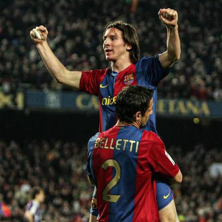
Hattrick đầu tiên vào lưới Real Madrid tại sân Camp Nou
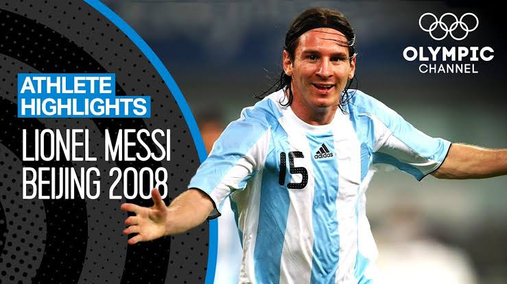
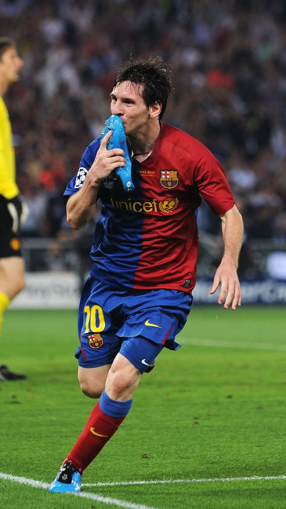
Bàn thắng đánh đầu lịch sử vào lưới Manchester United tại Rome, ấn định cú ăn ba vĩ đại cùng Barcelona
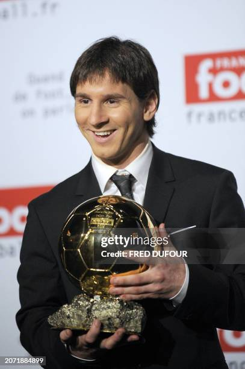
Chiến thắng áp đảo với 98.5% phiếu bầu tại Paris năm 22 tuổi, mở ra kỷ nguyên thống trị túc cầu.
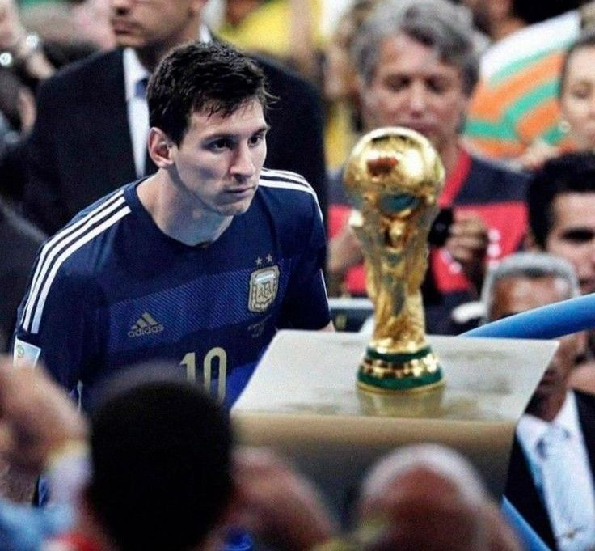
Argentina 0-1 Đức (phút 113)
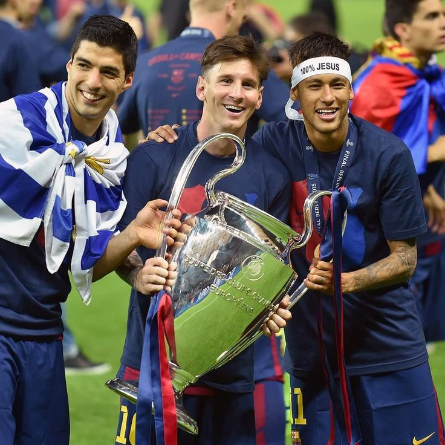
Chung kết: Barcelona 3-1 Juventus - Bộ ba hủy diệt MSN đưa Barca hoàn tất cú ăn ba vĩ đại tại Berlin.
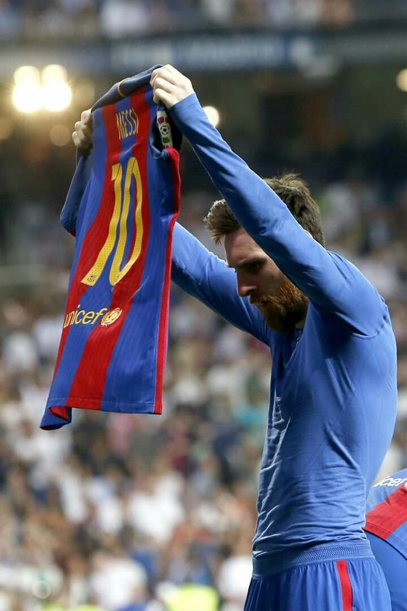
Real Madrid 2-3 Barcelona (phút 90+2) - Bàn thắng thứ 500 và màn phơi áo tại thánh địa Bernabéu.
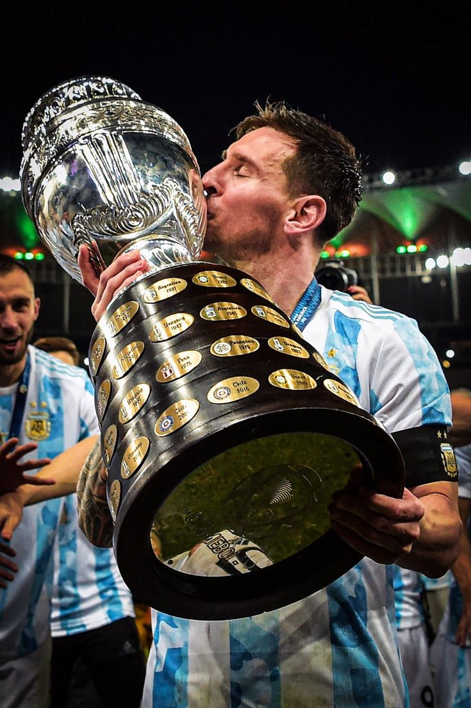
Argentina 1-0 Brazil. Chấm dứt 28 năm mòn mỏi chờ đợi danh hiệu cùng ĐTQG.
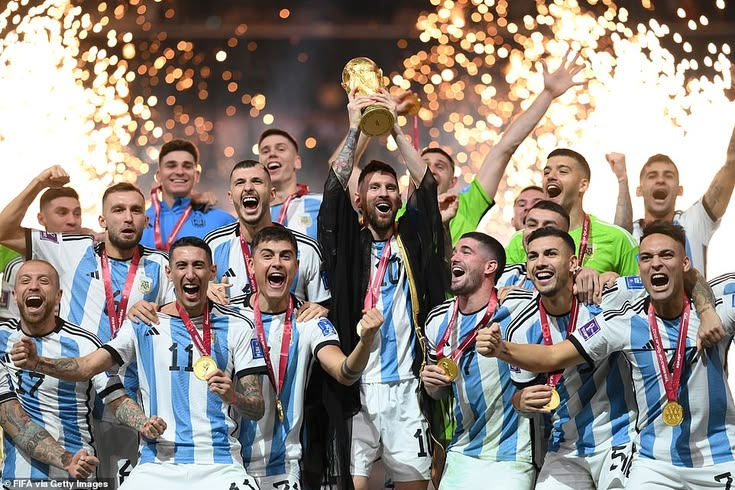
Argentina 3-3 Pháp (Pen 4-2) - Chiếc áo Bisht và cúp vàng Lusail,chính thức hoàn tất sự nghiệp vĩ đại nhất lịch sử.
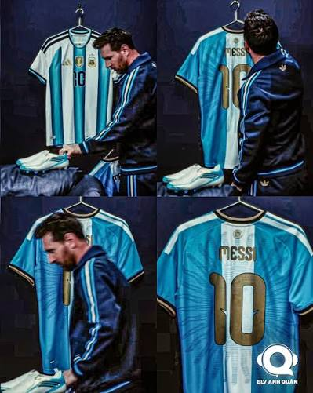
06/10/2026 Vũ điệu cuối cùng trong màu áo tuyển